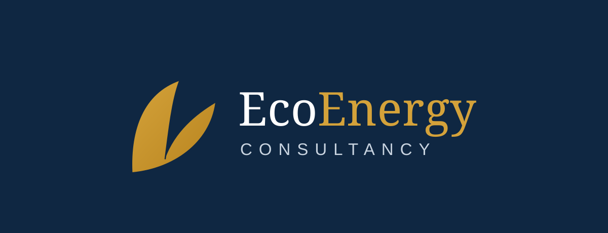

We take renewable energy projects from go/no-go to bankable.
Advisory, engineering, and independent due diligence for developers, financiers, and landowners — from first screening to financial close.
Scroll — each section is a stage gate ↓
The whole line, one firm
Every project passes the same gates. We run all of them.
Most advisors cover one gate. EcoEnergy carries a project through the full sequence — or steps in at any gate to verify someone else's work.
- Screening · go/no-go
- Conceptual
- Pre-feasibility
- Feasibility
- Basic design
- Detail design
- Ready for construction
- Bankable
For developers & owners
Development advisory, gate by gate
Site screening and go/no-go calls before you spend real money. Conceptual studies, pre-feasibility, and full feasibility with yield, grid, land, and cost built on defensible assumptions. Basic and detail design taken to ready-for-construction.
For banks & financiers
Independent due diligence you can lend against
Technical and commercial due diligence for lenders, investors, and acquirers: red-flag reviews, assumption audits, contract and permit checks, and construction monitoring — reported the way credit committees need to read it.
In the field
What runs underneath every gate
We manage authority requirements and stakeholder approvals across the project cycle — so consents arrive when the schedule needs them, not after.
Risks identified, quantified, and allocated to the party best placed to carry them — in the register, the contracts, and the model, consistently.
Bankable analysis: financial models a lender's analyst can interrogate line by line, with every input traceable to a study, a contract, or a quote.
Start at your gate
Bring us the site, the term sheet, or the doubt.
A screening study answers go/no-go in weeks. A red-flag review answers "should we lend?" before the full DD spend.
CONTACT ECOENERGY →